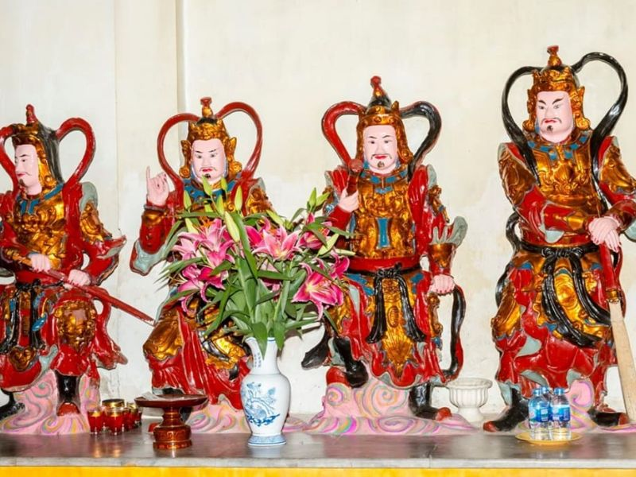
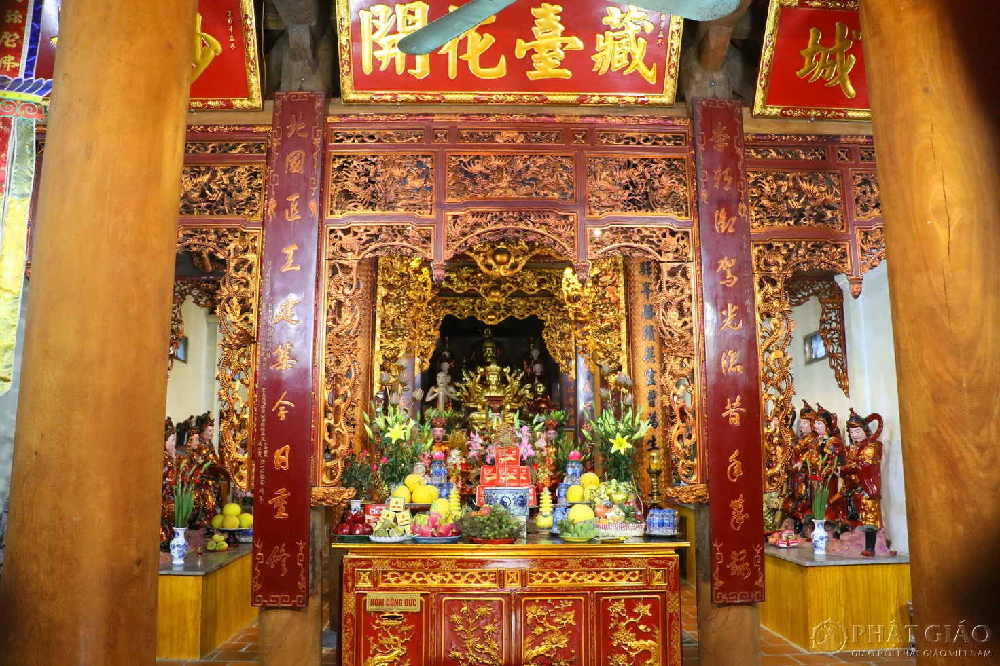
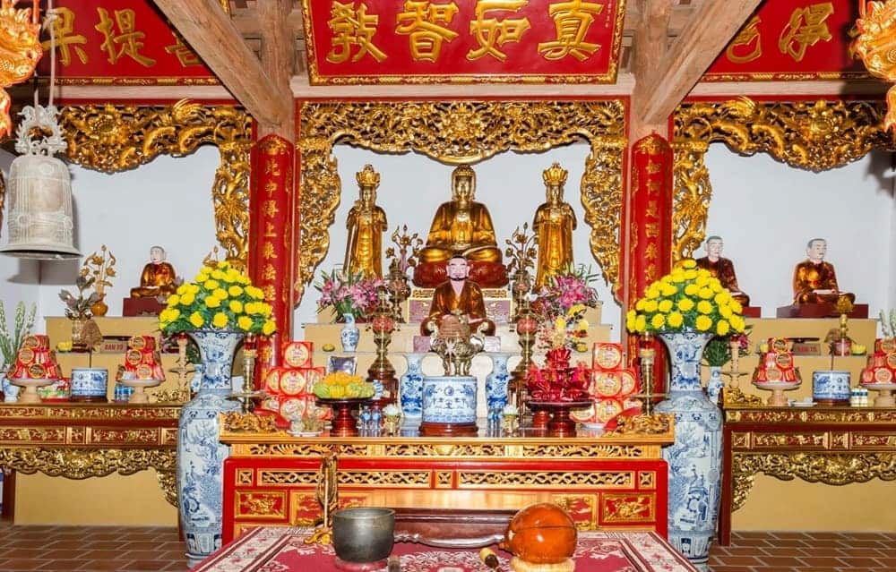

Ban Đức Ông
Nơi nhiều học sinh, sinh viên ghé lễ để cầu mong con đường học tập và sự nghiệp được hanh thông. Trước mỗi kỳ thi hay dấu mốc quan trọng, ban Đức Ông thường được chọn để xin sự thuận lợi, vững tâm và may mắn.
Khám phá
Ban Tam Bảo
Không gian linh thiêng để dâng hương và tĩnh tâm. Đây là nơi người đến lễ gửi gắm mong ước bình an, giữ tinh thần ổn định, tập trung và sáng suốt trước những kỳ thi và thử thách học tập.
Khám phá
Ban Thánh Mẫu
Nơi thờ Nguyên Phi Ỷ Lan – người phụ nữ tài đức thời Lý. Nhiều người đến đây để cầu mong sự sáng suốt, trí tuệ và bản lĩnh, đặc biệt trong học tập và thi cử.
Dâng lễVề Chùa Thánh Chúa
Điểm đến quen thuộc để cầu may mắn trong học tập và thi cử
Chùa Thánh Chúa – Nơi gửi gắm ước nguyện học tập của học sinh, sinh viên
Nằm trong khuôn viên trường Đại học Quốc Gia Hà Nội, Chùa Thánh Chúa là điểm đến quen thuộc của nhiều học sinh, sinh viên mỗi dịp thi cử. Không gian yên tĩnh và linh thiêng nơi đây mang lại cảm giác an tâm, giúp người đến cầu mong may mắn và sự hanh thông trong học tập.
- Được nhiều học sinh, sinh viên truyền tai nhau là nơi cầu thi cử đỗ đạt, học hành thuận lợi.
- Không gian thanh tịnh, cổ kính, giúp người đến dễ tập trung, tĩnh tâm trước những kỳ thi quan trọng.
- Vị trí nằm trong khuôn viên trường đại học tạo nên sự gần gũi, thuận tiện cho việc ghé thăm và lễ bái.
Không chỉ là nơi thờ tự mang giá trị lịch sử, Chùa Thánh Chúa còn trở thành chốn dừng chân quen thuộc để tìm kiếm sự bình tĩnh, tự tin và một chút may mắn trước những thử thách học đường.
Gợi Ý Mâm Lễ
Những lễ vật đơn giản nhưng đủ đầy, thể hiện sự thành tâm khi dâng lễ cầu học tập, thi cử và công danh tại Chùa Thánh Chúa.
Mâm lễ cầu học
Mâm lễ càng to, điểm càng gần học bổng
Cơ bản
0 VND
- Hương (nhang) đơn giản
- Hoa tươi hoặc hoa cúc
- Lễ nhỏ tượng trưng
- Không có sớ cầu học
- Không có lễ riêng
Mâm lễ Standard
190,000 VND
- Hương + hoa tươi đầy đủ
- Trái cây (chuối, táo, cam...)
- Bánh kẹo đơn giản
- Sớ cầu học cơ bản
- Chưa có lễ riêng từng ban
Mâm lễ Premium
290,000 VND
- Hoa tươi đẹp (cúc, ly...)
- Trái cây + bánh kẹo đầy đủ
- Lễ mặn nhẹ (xôi/chè)
- Tiền vàng + sớ cầu thi cử
- Lễ chia từng ban rõ ràng
Mâm lễ Ultimate
490,000 VND
- Mâm lễ đầy đủ các ban thờ
- Hoa đẹp + trái cây chọn lọc
- Xôi/chè + bánh kẹo đầy đủ
- Sớ viết sẵn cầu đỗ đạt, hanh thông
- Chuẩn bị sẵn – tiện đi lễ trước giờ thi
Văn khấn các ban thờ tại Chùa Thánh Chúa
Gợi ý văn khấn chi tiết tại từng ban giúp cầu học tập, thi cử đúng cách và thành tâm
Ban Đức Ông
Khấn xin đường học hành ổn định, cuộc sống hanh thông
Nam mô A Di Đà Phật (3 lần).
Con tên là: ………………………………………
Ngày tháng năm sinh: ………………………
Hiện đang sinh sống tại: ……………………
Hôm nay con thành tâm dâng lễ trước Đức Ông, cúi xin các Ngài chứng giám lòng thành.
Con xin phù hộ cho việc học của con được ổn định, đầu óc minh mẫn, gặp bài khó không nản,
gặp bài dễ không chủ quan. Xin cho con giữ được ý chí, chăm chỉ mỗi ngày,
không mở sách ra rồi lại mở điện thoại ngay sau đó.
Xin cho cuộc sống và việc học được thuận lợi, gặp thầy cô tốt, bạn bè tốt,
đi đúng đường, chọn đúng hướng và biết cố gắng đúng lúc.

Ban Tam Bảo (Ban Phật)
Khấn cầu bình an, tâm tĩnh và học đâu nhớ đó
Nam mô A Di Đà Phật (3 lần).
Con tên là: ………………………………………
Ngày tháng năm sinh: ………………………
Hiện đang sinh sống tại: ……………………
Hôm nay con đến trước cửa Phật, thành tâm dâng hương hoa lễ vật,
cúi xin chư Phật mười phương chứng giám.
Con xin sám hối những lúc lười biếng, trì hoãn,
học thì ít mà nghĩ mình giỏi thì nhiều. Xin cho con buông bỏ xao nhãng,
giữ tâm sáng, lòng bền và biết quý trọng thời gian.
Cúi xin gia hộ cho con được bình an, tập trung, tiếp thu tốt,
học một hiểu mười, thi cử vững vàng và luôn sống hướng thiện.

Ban Thánh Chúa
Nơi cầu học tập, thi cử và công danh tại Chùa Thánh Chúa
Nam mô A Di Đà Phật (3 lần).
Con tên là: ………………………………………
Ngày tháng năm sinh: ………………………
Hiện đang sinh sống tại: ……………………
Hôm nay con đến trước ban Thánh Chúa, thành tâm kính lễ,
cúi xin chứng giám lòng thành của con.
Con cầu xin cho con đường học tập được hanh thông,
gặp kỳ thi thì bình tĩnh, gặp đề khó thì sáng trí,
gặp câu lạ thì không hoảng, gặp câu dễ thì không tô nhầm đáp án.
Xin cho công sức ôn luyện của con được đền đáp xứng đáng,
đạt kết quả tốt bằng chính năng lực và sự cố gắng của bản thân.
Nếu còn thiếu sót, xin cho con biết sửa mình và tiếp tục tiến lên.
Nam mô A Di Đà Phật (3 lần).

Vãn cảnh
Gửi tâm thành, đón đường học rộng mở
{kind=link}
{kind=link}
{kind=link}
{kind=link}
{kind=link}
{kind=link}
{kind=link}
{kind=link}
Hoạt động & Trải nghiệm
Khám phá các hoạt động tâm linh quen thuộc, nơi mỗi lựa chọn đều mang theo một lời nguyện cầu.
Hòm công đức
Gửi gắm tấm lòng thành thông qua việc công đức, góp phần duy trì và gìn giữ không gian tâm linh tại chùa. Mỗi đóng góp, dù lớn hay nhỏ, đều mang ý nghĩa tích đức và cầu mong bình an, may mắn trong cuộc sống.
Phóng sinh
Thực hiện nghi thức phóng sinh với mong muốn tích đức, gieo duyên lành và giải trừ nghiệp chướng. Đây không chỉ là hành động mang tính tâm linh mà còn thể hiện lòng từ bi đối với muôn loài.
Xem bói
Xin quẻ để tìm lời giải cho những băn khoăn trong tình duyên và cuộc sống. Mỗi quẻ bói mang một thông điệp riêng, giúp bạn có thêm góc nhìn và định hướng rõ ràng hơn cho những quyết định phía trước.
Câu hỏi thường gặp
Những thắc mắc phổ biến khi đi Chùa Thánh Chúa cầu học tập, thi cử lần đầu
Đi Chùa Thánh Chúa cầu học tập có thật sự linh không?
Chùa Thánh Chúa được nhiều người biết đến là nơi gửi gắm mong cầu về học hành, thi cử và công danh. Nhiều người tin rằng khi thành tâm khấn nguyện sẽ có thêm sự tự tin, tinh thần sáng suốt và gặp thuận lợi trên con đường học tập. Điều quan trọng nhất vẫn là sự cố gắng của chính bản thân.
Đi Chùa Thánh Chúa cần chuẩn bị lễ gì?
Lễ vật nên chuẩn bị đơn giản và trang nghiêm như hương, hoa tươi, trái cây, bánh kẹo hoặc nước sạch. Một số người mang thêm bút, sổ tay hoặc vật phẩm học tập nhỏ với ý nghĩa cầu khai trí và học hành hanh thông. Không cần mâm lễ lớn, quan trọng là lòng thành.
Nên đi Chùa Thánh Chúa vào thời điểm nào?
Nhiều người thường đi trước các kỳ thi, đầu năm mới hoặc khi chuẩn bị bước vào giai đoạn học tập quan trọng. Tuy nhiên, bạn có thể tới chùa bất cứ thời điểm nào trong năm. Nếu muốn không gian yên tĩnh hơn, nên tránh cuối tuần hoặc giờ đông khách.
Có cần chuẩn bị bài khấn trước không?
Không bắt buộc phải thuộc bài khấn sẵn, nhưng nên chuẩn bị trước nội dung mong cầu để khi lễ không bị lúng túng. Bạn có thể khấn theo văn mẫu hoặc nói bằng lời của mình, miễn rõ ràng, lịch sự và thành tâm.
Cầu học tập xong có học giỏi ngay không?
Việc đi chùa không thay thế cho quá trình học tập. Cầu nguyện giúp nhiều người cảm thấy an tâm, có động lực và thêm niềm tin vào bản thân. Kết quả tốt vẫn đến từ sự chăm chỉ, phương pháp học đúng và tinh thần kiên trì.
Đi một mình cầu học tập có được không?
Hoàn toàn được. Nhiều người chọn đi một mình để dễ tập trung suy nghĩ và thành tâm khi khấn nguyện. Điều quan trọng không phải đi cùng ai, mà là thái độ nghiêm túc và mong muốn hướng thiện của bạn.
Vị trí
Nếu có dịp, bạn có thể đến thăm Chùa Thánh Chúa tại địa chỉ: